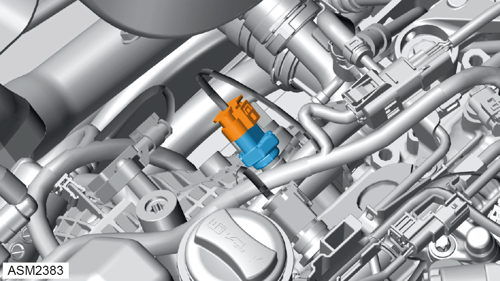

Pressure / Temperature Sensor - Indirect - 4 Cylinder
Print
Operation Code: 42.05.17-02
Removal
- Depressurise fuel system. Refer to procedure.

- Disconnect harness connector from fuel pressure / temperature sensor.
- Remove fuel pressure / temperature sensor. Torque 38 Nm.
NOTE: Be prepared to catch any excess fluid.
NOTE: Plug fuel rail to fuel pressure/temperature sensor aperture to prevent ingress of dirt.
Installation
-
Installation is the reverse of removal procedure except for the following:
- Apply clean engine oil to threads and mating surfaces of fuel pressure/temperature sensor.